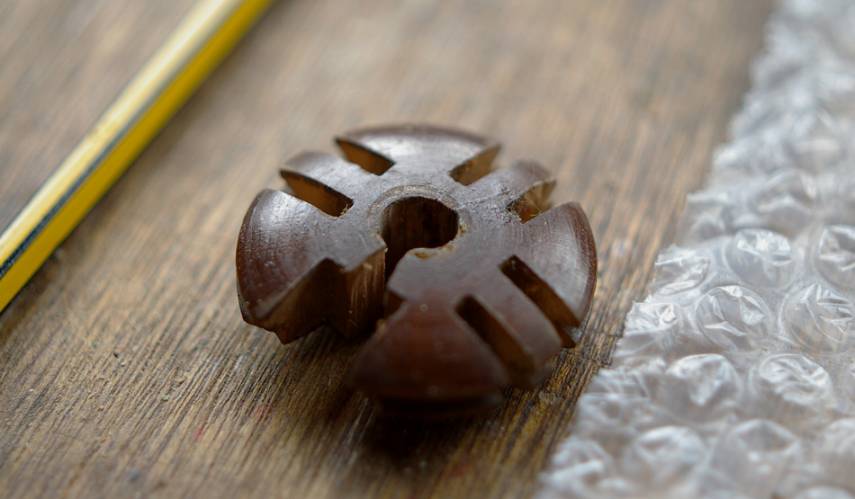

Slevels
Geen enkel hi-tech bedrijf kan nog zonder goede slevels. Daarom maken wij ons sterk om de beste slevels ter wereld te leveren. Onze inkopers speuren de hele wereld af naar de hoogste kwaliteit materialen. Samen met het vakmanschap van onze slevelaars ontstaat een product wat in de wereld zijn weerga niet kent in design en gebruik.
De Volronn Research & Development afdeling heeft experts op het gebied van materiaaltechnologie. Onze medewerkers zijn veelal onderzoekers en technici bij universiteiten, onderzoeksinstituten en de industrie, die er behagen in scheppen om kennis over de verwerking en toepassing van materialen te verspreiden of te absorberen, binnen en buiten het materialenveld.
Onze slevelaars zijn niet zomaar mensen die zich bekwaamd hebben in een of slechts enkele activiteiten binnen het slevelen. Zij verstaan hun vak zoals het heet in het spraakgebruik. Dat kan zijn het handmatig en/of machinaal maken van onderdelen. De meeste van de daarvoor benodigde vaardigheden hebben ze in de praktijk geleerd. In de opleidingsperiode volgt zo iemand vaak een dag- of dagdeel theorie aan een ROC of een ander opleidingsinstituut ter ondersteuning van zijn vakkennis en vaardigheden.
Het beroep van slevelen wordt al eeuwen uitgeoefend. In het verleden werd dan vaak gesproken van ambachtsslevelaar. Denk in dit verband aan de ambachtscholen van jaren terug. Deze stonden bij veel mensen niet in hoog aanzien. Tegenwoordig zit het bedrijfsleven te 'springen' om mensen met een soortgelijke opleiding. Men zegt dan ook vaak: “Wat een vakman!”. In de tijd van de gilden kwamen jongelui bij een meester (bijvoorbeeld een meesterslevelaar) in de leer. Vervolgens kon men daar gezel worden en als de meester niet te benauwd was voor concurrentie, uiteindelijk meesterslevelaar.